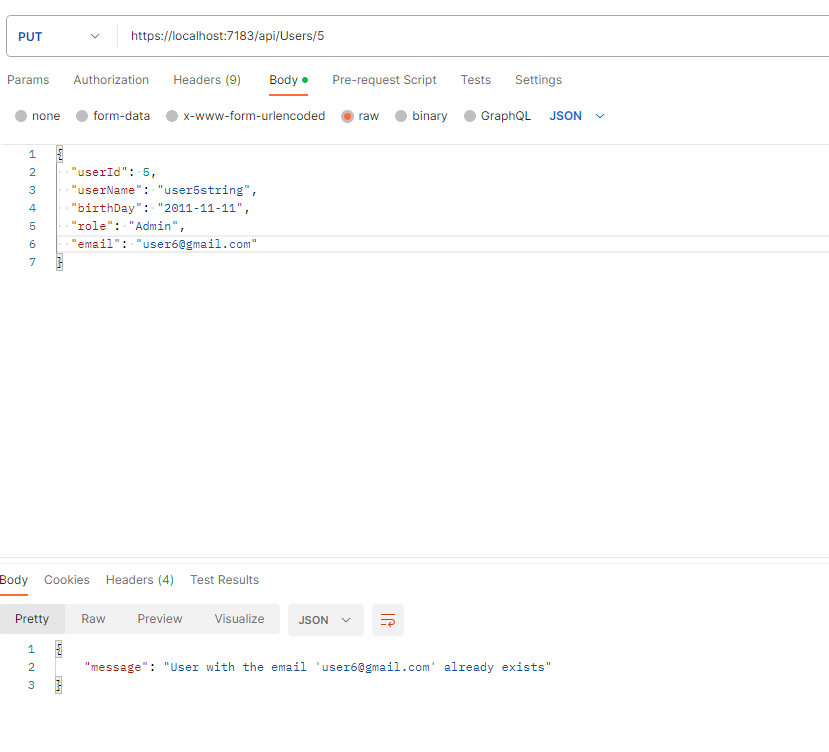
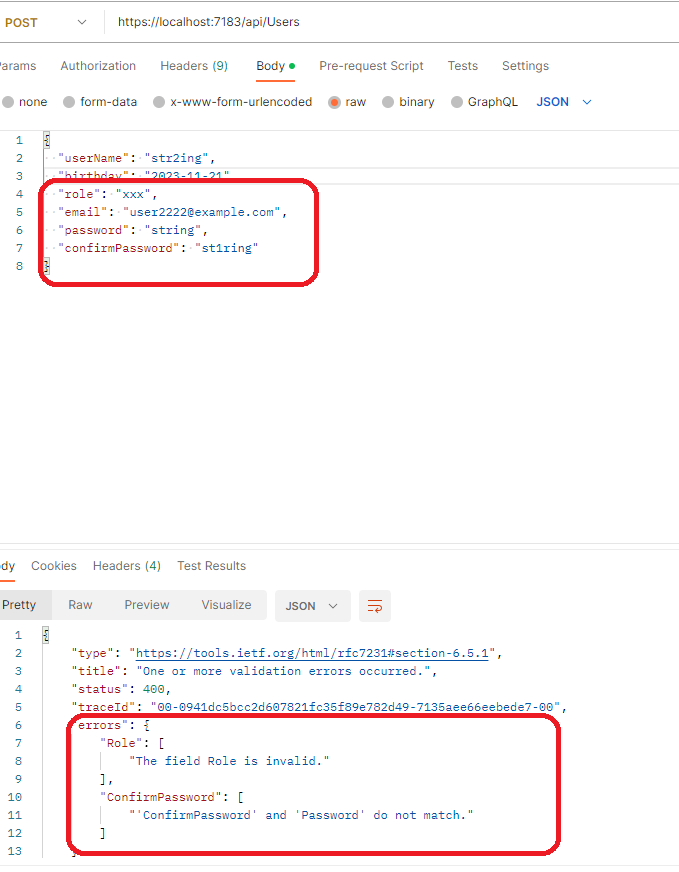
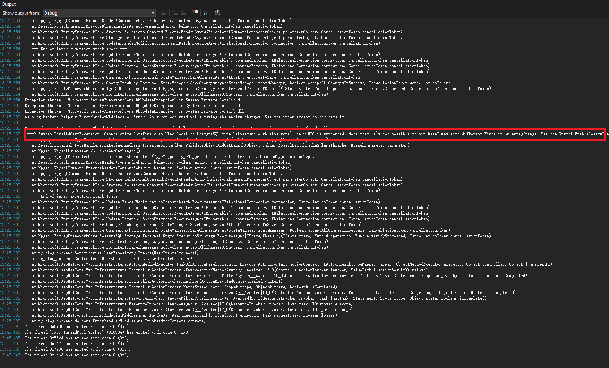
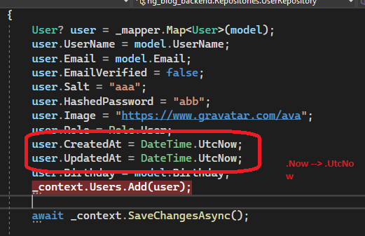

Handel Exceptions
-
Handling exceptions is crucial for developing a robust and secure
application, I will talk about how to handle exceptions in .NET.:
- Custom exceptions
- Framework-related exceptions
- Unhandle errors
-
Custom Exceptions
I developered an class named AppException which inherits from
Exception to throw some custom exceptions:
-
This is the custom exception class:
public class AppException : Exception { public AppException() : base() { } public AppException(string message) : base(message) { } public AppException(string message, params object[] args) : base(string.Format(CultureInfo.CurrentCulture, message, args)) { } } -
Use case 1 : throw custom exceptions in repository( or service)
bool emailExists = await _context.Users.AnyAsync(x => x.Email == model.Email); if (emailExists) throw new AppException("User with the email '" + model.Email + "' already exists"); -
Use case 2: use the excetpion in the middleware
// Excerpt from ErrorHandlerMiddleware.cs public async Task Invoke(HttpContext context) { try { await _next(context); } catch (Exception error) { var response = context.Response; response.ContentType = "application/json"; switch (error) { case AppException e: // custom application error response.StatusCode = (int)HttpStatusCode.BadRequest; break; case KeyNotFoundException e: // not found error response.StatusCode = (int)HttpStatusCode.NotFound; break; default: // unhandled error _logger.LogError(error, error.Message); response.StatusCode = (int)HttpStatusCode.InternalServerError; break; } var result = JsonSerializer.Serialize(new { message = error?.Message }); await response.WriteAsync(result); } }In Program.cs file, use this middleware class
// global error handler app.UseMiddleware
();
-
Framework-related Errors
- Applying data annotations to the model
public class UserUpdateDto { public int UserId { get; set; } public string UserName { get; set; } = string.Empty; public DateOnly? BirthDay { get; set; } = new DateOnly(2000, 1, 1); [Required] [EnumDataType(typeof(Role))] public string Role { get; set; } = "User"; [EmailAddress] public string Email { get; set; } = string.Empty; [MinLength(6)] [MaxLength(30)] public string? Password { get; set; } [Compare("Password")] public string? ConfirmPassword { get; set; } } // use the model in UsersController.cs [HttpPut("{id}")] public async TaskUpdate(UserUpdateDto user) { await _userRepository.Update(user); return Ok(new { message = $"User {user.UserId} updated" }); } Framwork will throw the appropriate exceptions according to the added annotations

-
Unhandle Errors
I met an error like this: Entity Framework - "An error occurred while updating the entries. See the inner exception for details."
I checked out in Output window of Visual Studio Editor and found the detailed inner exception: "System.InValidCastExcetpion: Cannot write DateTime with Kind=Local to PostgreSQL type 'timestamp with time zone', only UTC is supported."
Solution: I changed "Datetime.Now' to 'Datetime.UTCNow' in the code. Issue is resolved.  
When facing challenges, remain calm and turn to Google for solutions. Remember that you're not alone on your development journey, and there's always a path forward. Happy coding!